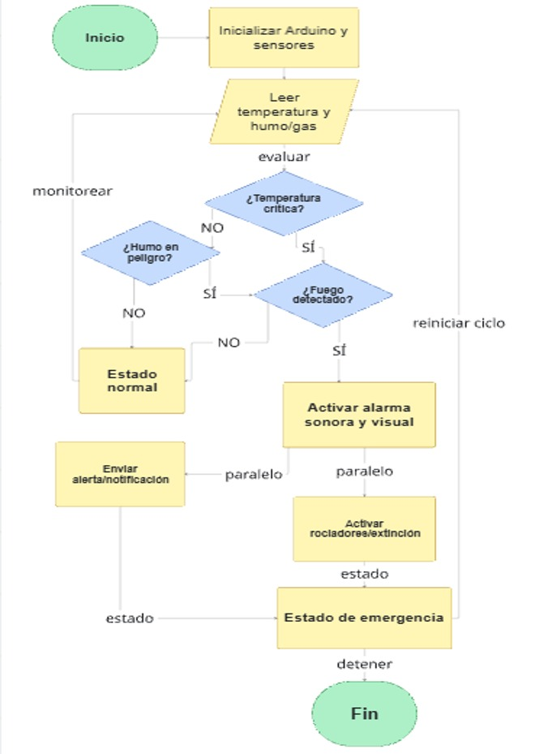
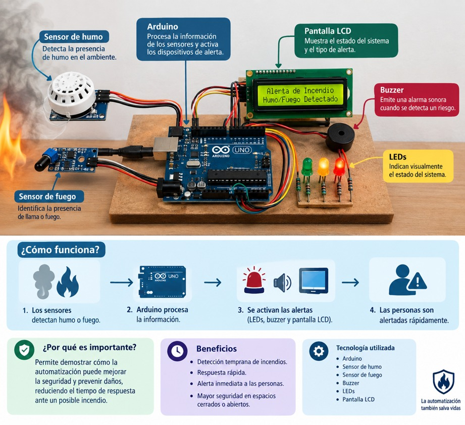
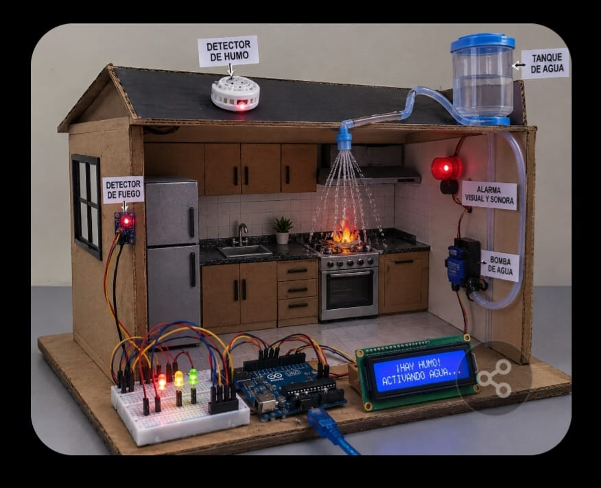
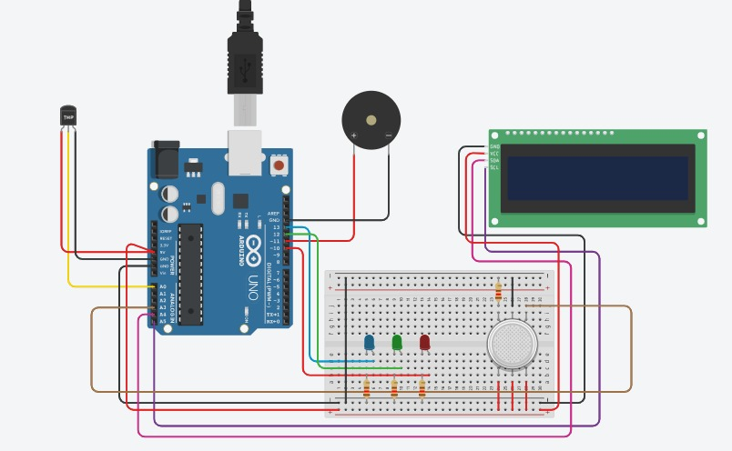

Sistema Automatizado de Detección y Control de Incendios
Tarea 02 · Proyecto con Arduino, sensores y alarmas
Docente: Jordy Chirino Balcázar
|
Especialidad: IA
|
Grado y grupo: 5.-A
Integrantes:
Álvarez García Blanca Mariana, Castillo Ovando Manuel,
Hernández Hernández Brandon Gabriel, Pérez Salas Sonia Fernanda
y Sánchez Rodríguez Barbara Raquel.
🚩 Problema o necesidad
Situación actual
Los incendios pueden comenzar de forma inesperada y, si no se
detectan a tiempo, pueden causar daños materiales y poner en
riesgo a las personas. La detección manual depende de que alguien
se encuentre cerca y pueda identificar el humo o el fuego.
Necesidad detectada
Se necesita un sistema que detecte automáticamente la presencia
de humo o fuego y avise cuando exista un posible incendio,
permitiendo actuar con mayor rapidez.
Razón para automatizar
Automatizar este proceso permite vigilar constantemente el área y
generar una alerta sin intervención humana. Arduino recibe la
información de los sensores y, cuando detecta una situación de
riesgo, activa el buzzer, los LEDs y muestra el estado en la
pantalla LCD.
📋 Justificación del proyecto
El proyecto se realiza con el propósito de desarrollar un Sistema
Automatizado de Detección y Control de Incendios con Arduino,
capaz de detectar la presencia de humo o fuego y generar una
alerta de manera rápida.
El sistema utiliza sensores de humo y fuego para identificar una
posible situación de riesgo. Cuando se detecta una condición
anormal, Arduino procesa la información y activa diferentes
medios de alerta, como un buzzer, LEDs y una pantalla LCD, donde
se puede visualizar el estado del sistema.
Importancia:
la implementación de este proyecto permite demostrar cómo la
automatización puede utilizarse para mejorar la seguridad y
prevenir daños, reduciendo el tiempo de respuesta ante un posible
incendio y facilitando que las personas sean alertadas
oportunamente.
🎯 Objetivo general
Desarrollar un Sistema Automatizado de Detección y Control de
Incendios con Arduino, capaz de monitorear constantemente un
espacio y detectar la presencia de humo o fuego mediante
sensores. Al identificar una posible situación de riesgo, el
sistema deberá activar automáticamente alarmas visuales y
sonoras, además de mostrar el estado del sistema mediante una
pantalla LCD.
El proyecto busca integrar diferentes componentes electrónicos y
de programación para crear un prototipo funcional de seguridad,
demostrando cómo la automatización puede utilizarse para detectar
de manera oportuna una situación de incendio y generar una
respuesta inmediata.
Resultado principal esperado
Obtener una maqueta funcional de un sistema de detección de
incendios, en la que los sensores, Arduino, LEDs, buzzer y
pantalla LCD trabajen de manera coordinada, reconociendo la
condición de riesgo y activando las alertas correspondientes.
Meta del proyecto
Diseñar, construir y comprobar el funcionamiento de un prototipo
automatizado de detección de incendios, utilizando componentes
electrónicos accesibles y una programación adecuada. Se pretende
lograr que el sistema:
Detecte la presencia de humo y fuego mediante sensores.
Procese la información recibida utilizando Arduino.
Active automáticamente una alarma sonora mediante el buzzer.
Encienda señales luminosas mediante LEDs para indicar el nivel de riesgo.
Muestre en la pantalla LCD información sobre el estado del sistema.
Mantenga un monitoreo constante del área.
📌 Objetivos específicos
Diseñar un sistema de detección de incendios utilizando Arduino y sensores de humo y fuego.
Integrar los sensores, LEDs, buzzer y pantalla LCD para que funcionen de manera coordinada.
Programar el Arduino para identificar diferentes situaciones de riesgo y activar automáticamente las alarmas correspondientes.
Construir una maqueta que represente el funcionamiento del sistema automatizado dentro de una vivienda.
Realizar pruebas para comprobar que los sensores y las alarmas respondan correctamente ante la detección de humo o fuego.
Metas alcanzables del proyecto
Para alcanzar el objetivo general, el proyecto se dividió en las siguientes metas:
Diseño y planificación: definir el funcionamiento del sistema, seleccionar los componentes necesarios y establecer cómo estarán conectados.
Instalación de componentes: conectar correctamente Arduino, sensores, LEDs, buzzer y pantalla LCD, verificando que cada componente funcione de manera individual.
Programación: crear y cargar el programa en Arduino para que pueda recibir la información de los sensores, identificar situaciones de riesgo y activar las alertas.
Construcción de la maqueta: integrar el circuito electrónico en la maqueta de la vivienda, colocando los sensores y dispositivos de alerta en lugares adecuados.
Pruebas y funcionamiento: realizar diferentes pruebas de detección para comprobar que el sistema detecte el riesgo, active las alarmas y muestre correctamente el estado en la pantalla LCD.
🔀 Entradas y salidas del sistema
Información que recibe el sistema (entradas)
Sensor de humo: detecta la presencia de humo en el ambiente.
Sensor de temperatura: mide la temperatura y detecta aumentos peligrosos.
Sensor de flama: identifica la presencia de fuego.
Botón de emergencia: permite activar manualmente la alarma.
Botón de reinicio: permite restablecer el sistema después de una emergencia.
Sensores adicionales: pueden detectar movimiento, apertura de puertas u otras condiciones.
Acciones que ejecuta el sistema (salidas)
El Arduino analiza las señales de los sensores y, dependiendo de los valores detectados:
Activa una sirena o buzzer cuando detecta una situación de peligro.
Enciende LEDs de alerta para indicar el estado del sistema.
Muestra información en una pantalla LCD.
Activa un sistema de rociadores o bomba de agua, si el proyecto cuenta con él.
Puede activar un servo o mecanismo para abrir una salida de emergencia.
Puede enviar una señal a otro sistema de alarma.
🔧 Selección de sensores y actuadores
Para desarrollar el sistema se seleccionaron componentes que
permiten detectar una posible situación de incendio y generar una
respuesta automática. Cada componente cumple una función
específica dentro del sistema.
💨
Sensor de humo MQ-2
Detecta humo y diferentes gases presentes en el ambiente.
Se eligió porque permite detectar la presencia de humo de
manera rápida y es compatible con Arduino.
🔥
Sensor de fuego o llama
Detecta la presencia de una fuente de llama mediante un
sensor infrarrojo, complementando la detección realizada
por el sensor de humo.
💡
LEDs
Proporcionan señales luminosas para indicar diferentes
estados o niveles de alerta del sistema.
🔊
Buzzer
Genera una señal sonora cuando recibe una orden de
Arduino, funcionando como alarma para avisar de manera
inmediata.
🖥️
Pantalla LCD
Permite mostrar mensajes e información sobre el estado
del sistema, indicando si está en estado normal o de
emergencia.
🧠
Arduino UNO
Microcontrolador que recibe y procesa las señales de los
sensores y controla los dispositivos de salida. Se
eligió por ser accesible, programable y compatible.
Comprobación de los componentes:
los componentes seleccionados son compatibles entre sí y pueden
ser controlados mediante Arduino. Se realizan pruebas
individuales y posteriormente pruebas del sistema completo, por
ejemplo verificando que el sensor de humo responda ante el humo,
que el sensor de fuego detecte una llama, y que Arduino active
correctamente los LEDs, el buzzer y la pantalla LCD.
🔌 Diagrama de conexión preliminar
Propósito: evitar errores antes del cableado
físico.
Componentes y conexiones
Arduino Uno: placa controladora principal, alimentada por USB o 9V.
Sensor de humo: entrada digital → Pin digital 2.
Sensor de fuego: entrada digital → Pin digital 3.
LED rojo (alarma visual): salida → Pin digital 12 + resistencia 220Ω a GND.
Alimentación: todos los componentes comparten 5V y tierra (GND) comunes.
🧩 Algoritmo / Pseudocódigo
Propósito: diseñar la lógica antes de programar.
Configurar pines: Pin 2 y 3 como entradas (sensores); Pin 11 y 12 como salidas (zumbador y LED); inicializar pantalla LCD.
Mostrar en LCD: "SISTEMA CONTRA INCENDIOS".
Repetir siempre: leer sensor de humo y sensor de fuego.
Si NO hay humo ni fuego → apagar LED y zumbador, mostrar en LCD "ESTADO: NORMAL".
Si detecta humo O fuego → encender LED rojo y activar zumbador, mostrar en LCD "¡ALERTA! FUEGO/HUMO".
💨🔥 Sensores
→
🧠 Arduino
→
🔊💡🖥️ Alarmas
Observación:
el sistema funciona en ciclo continuo, monitorea en tiempo real y
activa alarma visual y sonora al detectar humo o fuego, mostrando
el estado en pantalla.
📦 Lista de materiales (BOM)
Componentes electrónicos principales:
Placa Arduino Uno (o compatible): controlador principal del sistema.
Protoboard: permite conectar y organizar los componentes sin soldadura.
Sensor de humo: detecta la presencia de humo o partículas en el ambiente.
Sensor de temperatura: mide la temperatura para detectar aumentos anormales.
Buzzer activo: produce la señal sonora de alarma.
LEDs (3 o más): indican visualmente el estado del sistema.
Cables jumper y cables UTP: permiten realizar las conexiones eléctricas.
Pantalla LCD: muestra información del estado y las lecturas de los sensores.
Materiales para la maqueta:
Madera MDF (triplay) para la estructura física del proyecto.
Pinturas (azul, crema, negra, blanca) para decorar y dar acabado a la estructura.
Super Glue y plastiloca para unir piezas y componentes.
Bisagras y tornillos para partes móviles y ensamblaje de la maqueta.
Desarmador para colocar y ajustar los tornillos.
Decoraciones para mejorar la presentación visual del proyecto.
💰 Cotización y presupuesto
Costo estimado de los materiales principales:
Plastiloca — $25.00
Super Glue — $30.00
Pintura azul — $15.00
Pintura negra — $15.00
Pintura blanca — $15.00
Pintura crema — $15.00
Madera MDF — $206.50
Sensor de humo — $50.00 aprox.
Costo total estimado: $371.50 MXN
Presupuesto final: $1000 MXN. Cada integrante
aportará $200 MXN por algún imprevisto o modificación del equipo
mecánico, estructura y diseño.
👥 Distribución de responsabilidades
Con el propósito de llevar a cabo el proyecto de manera
organizada y eficiente, se asignaron diferentes actividades a
cada integrante del equipo, considerando las necesidades de
desarrollo, diseño y funcionamiento de la maqueta.
💻
Brandon — Desarrollo del código
Responsable de la elaboración, programación y revisión
del código. Realiza pruebas, identifica errores y efectúa
modificaciones para garantizar el funcionamiento correcto.
🎨
Sonia — Diseño y decoración
Participa en el diseño visual de la maqueta y en la
selección y colocación de elementos decorativos, cuidando
una presentación ordenada y atractiva.
🎨
Bárbara — Diseño y decoración
Participa en la elaboración del diseño y la decoración,
apoyando en la organización y colocación de los
materiales para una presentación limpia.
🎨
Blanca — Diseño y decoración
Colabora en el diseño y decoración de la maqueta,
apoyando en los detalles visuales y la organización de
los elementos que la conforman.
🔧
Manuel — Elaboración del circuito
Responsable de diseñar, ensamblar y realizar las
conexiones del circuito electrónico, verificando y
probando su correcto funcionamiento.
Trabajo colaborativo:
aunque cada integrante cuenta con una responsabilidad específica,
todos colaboran en las diferentes etapas del proyecto,
especialmente durante el ensamblaje, las pruebas finales y la
preparación de la presentación.
⚠️ Riesgos y seguridad
Riesgos identificados
Eléctricos: cortocircuito por cableado incorrecto, descarga o daño a componentes al conectar voltaje indebido.
Mecánicos: cortes al cortar o armar la estructura, pinchazos con cables o componentes.
Térmicos: calentamiento excesivo de la placa Arduino o componentes; no se usa fuego real para evitar quemaduras o incendio.
Medidas preventivas
Trabajar con la fuente de alimentación desconectada al cablear.
Usar solo voltaje de 5V o 9V (bajo voltaje).
Revisar conexiones antes de encender el sistema.
Manipular herramientas con cuidado al construir la maqueta.
Realizar pruebas sin materiales inflamables.
Propósito: garantizar la integridad de las
personas y del equipo durante todo el proyecto.
✅ Criterios de éxito
El proyecto será considerado funcional cuando el sistema sea
capaz de detectar de manera automática la presencia de humo o
fuego y responder correctamente ante una situación de riesgo.
Criterios principales
El sensor de humo debe detectar la presencia de humo y enviar una señal al Arduino.
El sensor de fuego debe detectar una fuente de calor o llama de manera adecuada.
Al detectar una situación de riesgo, debe encenderse el LED rojo como alarma visual.
El buzzer debe activarse para proporcionar una alerta sonora.
La pantalla LCD debe cambiar de "ESTADO: NORMAL" a un mensaje de alerta.
Las alarmas deben activarse automáticamente al detectar una condición de riesgo.
Cuando no exista peligro, el sistema debe regresar al estado normal.
El sistema deberá mantenerse funcionando correctamente durante una prueba continua de aproximadamente 10 minutos.
Comprobación
Se realizarán pruebas individuales y una prueba general del
sistema. Primero se comprobará cada sensor por separado y
posteriormente se provocará una situación controlada de
detección para verificar que el Arduino active correctamente el
LED, el buzzer y la pantalla LCD. Se registrará si cada prueba
fue exitosa o no exitosa.
🖼️ Galería del proyecto
Imágenes que muestran el diseño, los componentes, la maqueta y las conexiones del sistema automatizado.

Diagrama de flujo
Proceso de funcionamiento del sistema automatizado.

Componentes del sistema
Arduino, sensores, pantalla LCD, buzzer y LEDs

Maqueta del proyecto
PRepresentación de la vivienda con detección y control de incendios.

Diagrama de conexión
Conexiones preliminares de Arduino y los componentes electrónicos.